Tutorial
Get started
To start looking in Brenda, we need your Brenda account ( why? ). If you do not have one, you can visit: Brenda Registration Once you have your account, we can look for the enzymes you need and the numerical parameters you request.
Enzyme query
To get the enzymes you need, we offer three different kind of options. This inputs are in the select enzyme section.
EC Number
Enzymes are classified by the
IUBMB
according to the reaction they catalize. This corresponds to the
EC Number, which is a four number code, with the first one indicating the subclass
such as oxidoreductases, transferases, hydrolases, lyases, isomerases, ligases and translocases.
The second number indicates the functional group of reaction, the third indicates an specific
type of molecule and the fourth the last
level and the reaction itself. More info:
EC number
If you know the EC number of your enzyme of interest, indicate it in the input
shown in the next image:
.jpg)
Enzyme name
Enzymes have a lot of names that differ depending on the gen codifiding it, the reaction, historical reasons and so on. Brenda groups them according to its ec number, however, they are associated to the multiple names in which they are called in literature. This category is showed in the Brenda web page with the name 'Synonyms'.
Due to the length of the list, that contains every synonym of every type of enzyme on the database, this names are separeted in subclasses. Then, if you know just a particular name of your enzyme, first you have to know in which of this categories it is:
For the next step you have to select the functional group that is involved in the catalyzed reaction, such as:
.jpg)
In the follow space, you can type the name of the enzyme you know. You can search for the list below, remembering that it is a long list. This selector autocompletes your input and shows the posible names that are registered in the Brenda database, select the one that fits most with the name you know.
After you press the search button, a short list of posible type of enzyme is going to be shown (it can be just one). The selector shown the ec number and the Brenda recommended name. Select the one you are looking for, press 'go', and go on with the numerical parameter selector.
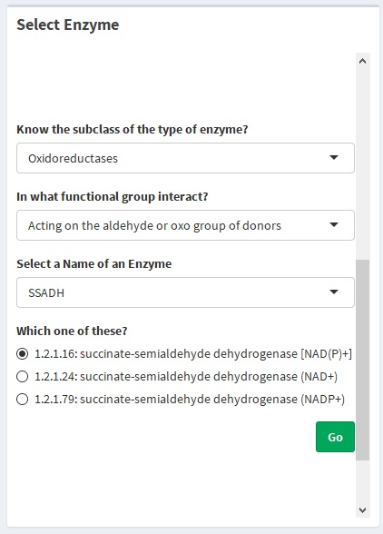Before the query
At this point, a table showing all the organism that has a protein with the same catalytic function define in the ec number, available in Brenda is generated. This table contains the next columns that depend on the enzyme type: ec number, systematic name (this could be empty) and recommended name; and the next columns that depend on the organism: Uniprot, organism (scientific name) and commentary. This last one is hidden by default, but can be shown selecting the "show the comentary column" checkbox.
.jpg)
After the parameter query is done , the protein table is going to have a Literature column that can be show clicking the checkbox next to the "Show commentary columns".
The way to proceed after this point is described in "Queries from the organism table" section . In this section, the optional proceeds to have a complex query are described.
Add Enzymes to the query
If more than just one enzyme type is needed, you can add another ecnumber to the query. This proccess can be done virtually undefinely. To add ec numbers to your organism table (or protein table) look for the "Add proteins" button in the side bar panel.
.jpg)
After clicking it, you are going to be back at the enzyme section , make sure the welcome panel in the top of the page (just below the toolbar) says " The enzyme your enter will be added to the search" if this is not the case, please go back to the Protein table seccion (by dashboard menu or by the quick access button in toolbar showed below) and press the "Add proteins" button again.
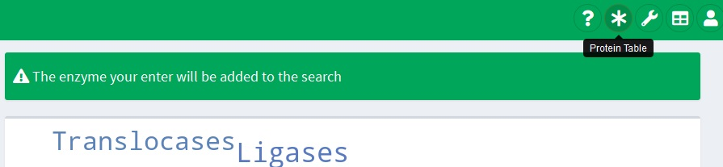If all is set, add enzymes to the query the same way the first ones were entered.
Erase the query
If you made a mistake and the ec number enter to the query is not the one you want to. You can erase this query and look for another one by clicking the "Go back and search another Enzyme" in the top/right corner.
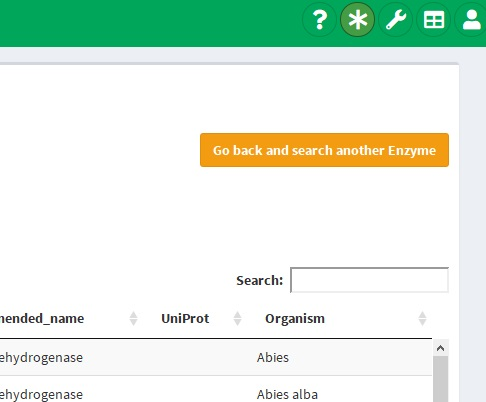In this case, the welcome panel should show:
.jpg)
Sadly, if you had more than one enzymes in the query, all of them are going to be erased.
Log out has the same effect. This is going to erase everything generated in the site. But, this has the advantage that specific tables is going to be saved
.jpg)
Queries from the organism table
After the organism table ( Protein Table ) is generated, it can be used to search for numerical parameters , amino acids sequence or PDB codes with their respective link to the RCSB PDB (The Protein Data Bank of the Research Collaboratory for Structural Bionformatics).
If you are interested in just one of this queries, you can skip the other in this tutorial. They are not depended to each other.
Get PDB
Generete a table with the PDB codes and their links to the RCSB PDB is done by clicking the "Get PDB" button above the Protein Table as show below.
.jpg)
The generated table looks like this
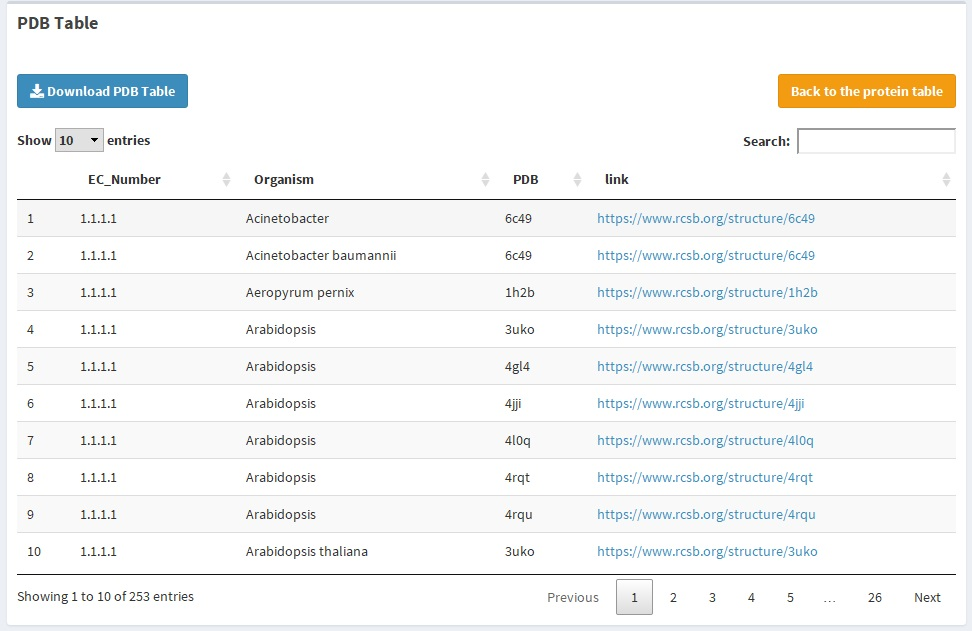The columns show the ec number, the organism, the PDB code and the link. If you click any of this link, you are going to be redirected to the PDB site with an image like this
.jpg)
Also, you can download the whole table clicking the blue button, or return to the Protein table section clicking the orange one
Get amino acids sequence
The uniprot code that some proteins have, are a distintive code provides by the Uniprot database , that a particular enzyme has. With this code you can access to the amino acids sequence of the protein. Brenda provides this code and the sequence with it. By clicking the "Get sequence" blue button, as show below, a table reporting the sequence found by BRENDA are going to be shown.
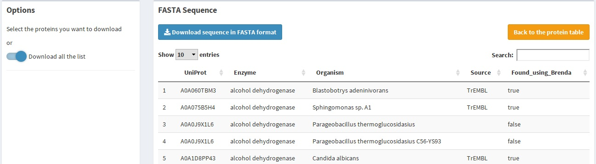This table look like this
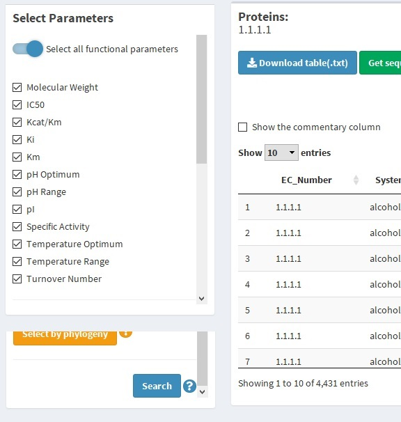You can access to the sequence code by download a .txt file clicking the blue button. The sequence to be downloaded can be selected in the report table clicking the respective row or download all the found sequence switching the "Download all the list" button in the sidebar.
Get functional parameters
The complete functional parameters query tutorial is in the next section . However, to generete a table with the 12 numerical parameters available in Brenda for every protein in the Protein table, you have to activate the "Select all functional parameters" switch on the top of sidebar, let the "Search for all parameters" switch activated above the table and click the "Search for parameters" green button at the end of the sidebar.
.jpg)
Functional Parameters Query
This is the particular functionality this application has and, naturally, one of the tools that has the most options. If you simply want all the numerical parameters available you can do this .
Selecting parameters
Brenda has 12 numerical parameters available for most of the ec number. Each of them are showed in different tables like this:
.jpg)
The functional parameters query generate a single table with the parameters selected separated by the organism (and the commentary) in which the enzyme is located. To select this parameters, click the checkbox on the left of the list in the sidebar. If you want to select them all activating the "Select all functional parameters" switch on the top of the sidebar.
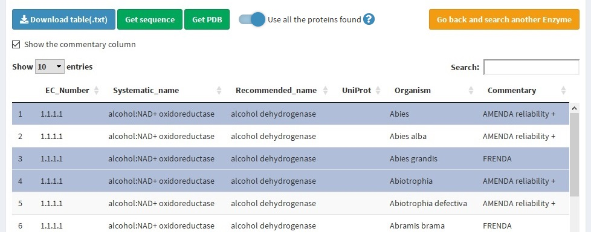You can also select the enzymes included in the Parameter table by clicking the rows corresponding to the organism you want. But, if the "Search for all the list" switch above the table is selected, the query is going to include all the enzymes, therefore, if you want to search just the selected ones, deactivate it.
.jpg) Note: Select the enzymes to the query will re-generate the Protein Table, leaving only those selected. The whole list of enzymes/organism
cannot be recovered, for that, do the
Enzyme query
again.
Note: Select the enzymes to the query will re-generate the Protein Table, leaving only those selected. The whole list of enzymes/organism
cannot be recovered, for that, do the
Enzyme query
again.
To do the query, click the "Search for parameters" green button at the end of the sidebar. This may takes several minutes.
.jpg)
Other options of query
Selecting by phylogeny
Sorry, but we are still working in this functionallity. It is going to be available soon.
Add enzymes
You can add more ec numbers to the query doing this .
Filter by Uniprot code
If you just want to use the enzymes that have Uniprot code , activate the switch below the list of parameters.
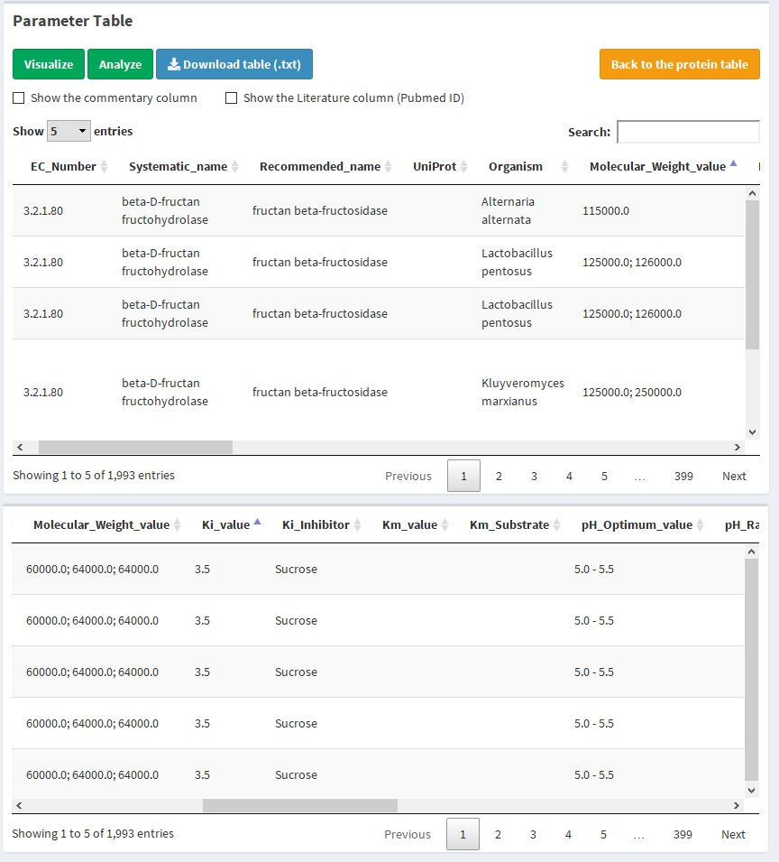The Parameter Table
The generated table has:
6 columns indicating enzyme data, same as the shown in the protein table :
EC number
Systematic name
Recommended name
Uniprot
(Collapsible) Commentary
(Collapsible) Literature: showing the Pubmed ID of the scientific paper
3 or 4 columns for each parameter, the amount of columns is determinated by the dependency of molecule, such as an inhibitor or substrate:
Value: indicating the value as a single number or as a range (independent if the parameter is defined as range or not). The column is named with the name of the parameter, an underscore and the word "value"
Substrate/Inhibitor: indicating the name of the substrate or inhibitor. If the parameter does not depend of a molecule, this columns is missing
(Collapsible) Commentary
(Collapsible) Literature
The parameter table looks like this:
.jpg)
Above the table are two checkbox indicating if the commentary and literature column is showed. If it is clicked, any of them, all the commentary (or literature) columns is showed, that is, of the organism and each parameter found. If both are selected, it will be look like this:
.jpg)
Filters
With the parameters table generated, you can also filter the numerical parameters setting the minimum and/or maximum value you want to preserve. For this there are slide inputs in the sidebar of the paremeters table that also have checkbox on the left. This sliders are going to be showed if the respective parameter was selected on the previous step. In case the enzyme does not have any parameter reported on the Brenda database (which can be due to the lack of data reported in the literature), the slider is going to report that the parameter wasn't found. In the example belox, there is no IC50 reported and the Kcat/Km was not required for query.
.jpg)
To use one parameter as a filtered, move the slider letting the white circle at the left indicating the minimum value and the one at the right indicating the maximum value your parameter is going to have. Then, click the checkbox next to the slider. Repite this for every parameter you want, and leave the checkbox uncheked if the parameter is indifferent to your filtering. Finally, click the "Filter" blue button to generete the filtered table. In the example below, the molecular weight was used as a filter, it is show that, the minimum value before and after the filtering, has changed.
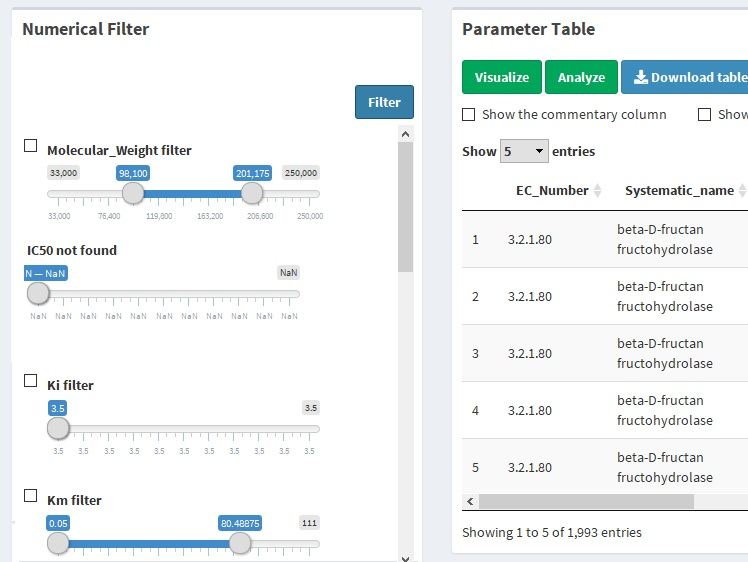.jpg) Note: There are a few Pubmed ID that have 0 as a code. This mean that searching with Brenda SOAP did not report the Pubmed ID from
the BRENDA literature code used internally on Brenda.
Note: There are a few Pubmed ID that have 0 as a code. This mean that searching with Brenda SOAP did not report the Pubmed ID from
the BRENDA literature code used internally on Brenda.
If you want to undone the filtering and recover the generated table as what it was just after the query, unchecked every checkbox on the sidebar, it doesn't matter any slider input does not have the the selectors on the minimum and maximum respectively. Then, click the " Filter" blue button.
.jpg)
Download table
The genereted and filtered table can be download locally by clicking the "Download table" blue button above the table.
.jpg)
The downloaded table is a .txt file which columns are separeted by the tabulator character. It contains the commentary and literature columns regardless of whether they are shown or not, and it has the parameter as it shown, this is, filtered.
.jpg)
You can access this table as you want, for reference Microsoft Office Excel can generete a workbook from this file, remember it has a header row, it's separeted by TAB character and it doesn't have the row names. With R you can open it with the follow command:
read.table(<table_name>, sep = "\t", header = TRUE)
The protein table can be downloaded too with the same format and particularities.
Summary table and quick access
This section describes 2 tools that are available at any moment in the app.
Summary table and where to find it
It is possible to generate a table showing how many attributes of each protein (differentating the ec number and the organism) have been found.
You can access this table by two ways. In the dashboard menu, located in the "Protein Search" seccion, or, by clicking the direct access toolbar with the icon. Once in the "Available Information" seccion click the "Refresh" blue button to generate or update.
Quick access toolbar
At the right\top corner there are four buttons in the toolbar. These buttons, called quick access, allow you to change the current seccion to:
= Tutorial seccion
.jpg)
= Protein table
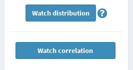= Summary table
.jpg)
= Principal page to log in or log out
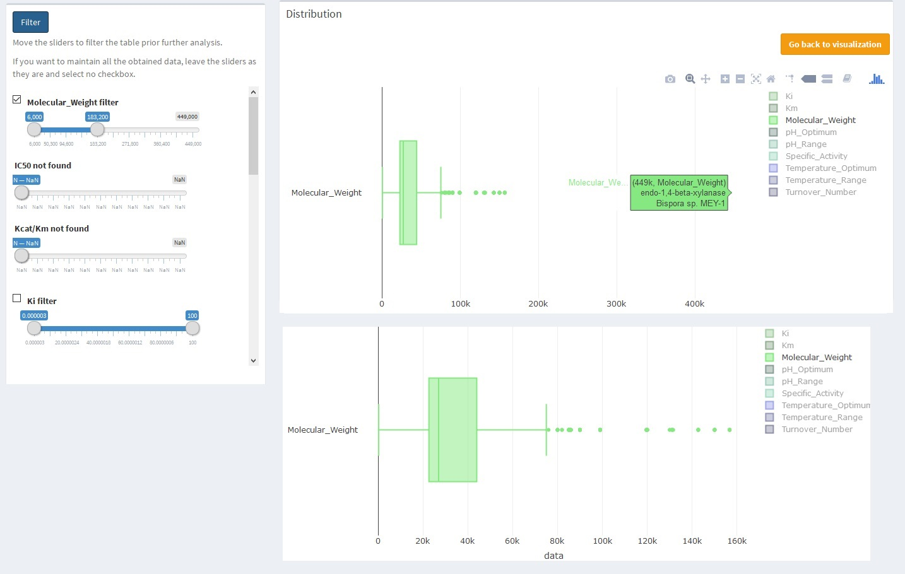Dashboard Menu
At any point of your work, you can jump to any seccion using the dashboard menu at the left of the site. This can be hide or show clicking the on the toolbar.
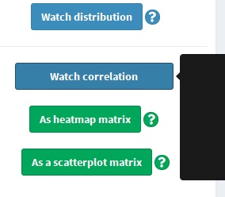Visualize
With the genereted tables, there are multiple option to do. The Cluster seccion, External tools and this one are about that. This seccion shows how to use the available visualizations FBS has.
Parameter found as bar plot
To start the visualization click the "Visualize" green button above the parameter table.
.jpg)
The first generated graph is a bar plot showing the found data, considering the parameters selected in the Functional Parameters Query #3 and the data filtered (or not) .
.jpg) Note: This graph is done with the
Plotly library
. Hence, you can hide/show the different parameters by clicking the legend on the right, save as .png, and make
different type of zooms.
Note: This graph is done with the
Plotly library
. Hence, you can hide/show the different parameters by clicking the legend on the right, save as .png, and make
different type of zooms.
Distribution as boxplot
Descriptive statistics quantitatively describes data. In this case, distribution can be analyse with a boxplor that indicates the quartiles, including the median. The distribution boxplot is generated by clicking the "Watch distribution" blue button on the sidebar panel.
.jpg)
The outliers are shown as point indicating value, organism and recommended name of the enzyme. Due to the different scale we recommend to show the functional parameters separately using the selector. Double click in one parameter is going to hide all the other parameters, one click and that parameter is going to hide.
The parameters of the same scale are:
Molecular Weight
IC50, Kcat/Km, Ki, Km, Specific Activity, Turmover Number
pH Optimum, pH Range, pI
Temperature Optimum, Temperature Range
To hide the outliers for futher anaylis or visualization you can go back to the parameter table (by going back to visualziation and then back to parameter table or using the dashboard menu ) and filter the data to hide this datum.
Note: this also will filter all the organism that hasn't molecular weight reported, and the data of the organism filtered.Correlation
Data can be correlated, this is, two variables may have any statistical association. This association, called correlation, whether casual or not. On the Parameters Found seccion, click the "Watch correlation" button, below the "Watch distribution" one. Two green buttons will be shown.
.jpg)
Correlation as heatmap matrix
A heatmap matrix represents a function of two variables as matrix, the matrix itself represent this two dimension and the function is represented with a color code (the heatmap). In this case, the two variables are all the functional parameter pairs of the found data. The heatmap represent a measure of the correlation.
Click the "As heatmap matrix" green button below the "Watch correlation" one. This is going to redirect to the generated heatmap.
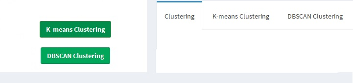The correlation looks like this:
.jpg)
The color code (color palette) can be changed by selecting any other palette on the side bar.
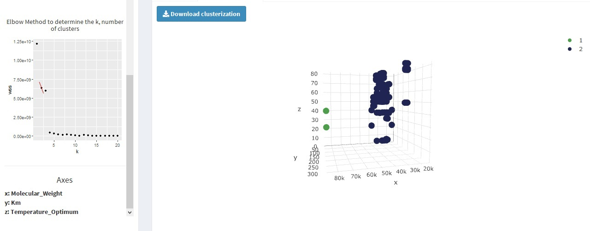Correlation as a paired scatter plot
The correlation also can be analyse visually instead of numerically. To watch a paired scatter plot, click the "As a scatterplot matrix" green button below the "As a heatmap matrix" one, or change the tab on the Correlation seccion after generate the heatmap matrix.
For storage reason, the paired scatter plot is able to have six parameters maximum, and, two minimum. Select the parameters to analyse an click the "Get correlation" button below. Keep in mind, if the correlated observations are more than 2000, the data is going to be uniformly filtered.
.jpg)
The genereted plot shown the scatter plots relating two variables, the distribution as a density histogram and whether the data was obtained from an wild type or mutant enzyme.
.jpg) Note: This graph is done with the
Plotly library
. Hence, you can hide/show the different parameters by clicking the legend on the right, save as .png, and make
different type of zooms.
Note: This graph is done with the
Plotly library
. Hence, you can hide/show the different parameters by clicking the legend on the right, save as .png, and make
different type of zooms.
Cluster
Cluster analysis is a technic of exploratory data mining and statistical data analysis. It consist on group a set of object related to each other more that those on other groups (clusters). To do clustering click the "Analyze" green button above the parameter table.
K-means
K-means is a clustering algorithm consisting on generete random points and calculate a distance among the nearest point, discarting the most distant one and repeting until the k (number of cluster) are generated. To do the k-means clustering click the "K-means clustering" green button on the Cluster seccion or change the tab to the K-means clustering.
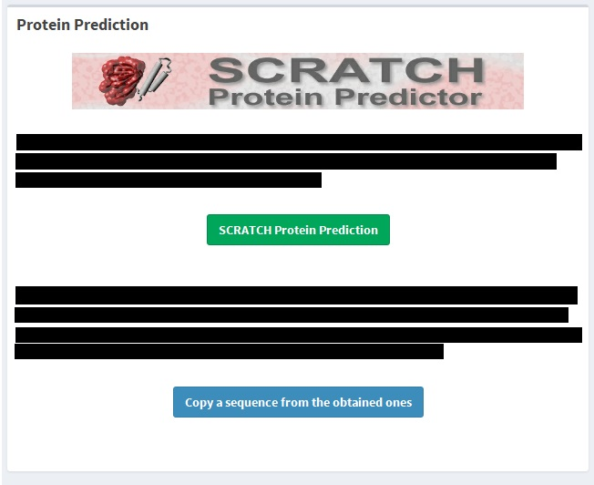On the sidebar select 2 (for a 2 dimensional clustering) or 3 (for a 3 dimensional one) and click the "Clusterize" blue button below the parameters list.
The k (number of cluster) is determined by calculating the within-cluster sum of square (WSS), which a measure of the distant of the point within each cluster. Then, the biggest decrease is choosen, this is called the "Elbow" method.
Note: This graph is done with the Plotly library . Hence, you can hide/show the different parameters by clicking the legend on the right, save as .png, and make different type of zooms.You also can download the clustering as a .txt file, the format has described before , containing the cluster as a column with the number of the cluster. This is more useful in case the data was reduced in order to allow the visualization.
External tools
Saved tables
Fast Brenda Searcher saves your last query for 72 hours in order to do your analysis easier. If you already make a query before, there will be a message on the toolbar.
.jpg)
To load the saved table, click the "more info" link to be redirected.
.jpg)
On the table in the right panel, select the tables you want to load. Particulary, the saved protein table, which contains the organisms and type of enzyme according to the ec number, will be going to be load whether it was selected or not.
Note: If on your previous query were parameters not selected, those parameters are going to be marked as "Not Found"After the selection is done, click the "Load Selected Table" blue button below the table. The selected table (include the Protein table) is going to be regenerated and the not selected are going to be erased. If you change your mind and don't want to saved this tables anymore, change the section (using quick access or dashboard menu ) or click the "Go back and search another enzyme" red button on the sidebar and the tables are going to be erased.
.jpg)
Errors
This is an application on development, hence, we are still dealing with a few minor issues. Some of them are identified and are presented as Unavoidable erros and the not identified yet can be reported on the Suggestions section . The ones that are identified, but depends on the user are presented as Avoidable erros on the section below.
Avoidable errors
If the user, on purpose or accidentally, enters an unvalid input that are identified, an error is going to be announced and the action won't be done. Those kind of error are listed here.
Enter Brenda User
Without a valid Brenda User, we cannot do any query, particullary, the first one: the Enzyme query.
.jpg)
Wrong Password
The entered password is invalid, but the mail is a valid Brenda User.
.jpg)
Not a Brenda Account
The entered mail hasn't registered on Brenda, to register, please enter on the Brenda Registration site .
Make an enzyme query
To be able to get amino acids FASTA sequence, PDB, or functional parameters, an enzyme query must be done first.
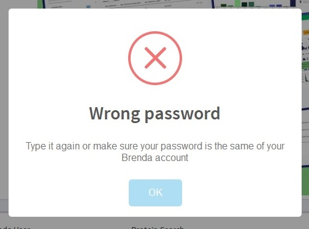Cannot add
Simply, if enzyme hasn't added to the query, there's no need to add more.
.jpg)
Make a functional parameters query
The visualization and the clustering analysis need functional parameters, therefore, to apply these tools, first do a functional parameters query) .
.jpg)
Wrong number of parameter selected
Some tools require selecting some of the functional parameters found. The number of this parameters are indicated, however, if the amount of selected parameter differs from those indicated, you're going to be notified and the action won't be done.
.jpg)
Unavoidable errors
Some issues are identified, but we haven't found a solution yet. Some of them has a not reported solution, but some not. The objective of this section is make those issues clear and make the user be aware of them.
The parameters appear selected, but the query doesn't show anything
We don't know what this happen, but it did happen several times on the tests. However, there is a simple soluction. First, deactivate the "" blue switch, then, select the parameters you need or reactivate the blue switch. Do the the query again, in case this is still happening repite the process or report it in the Suggestions section .
.jpg)
Reduce the obtained rows
Some visualization and analysis requires to much storage. In order to be able to do them anyway and avoid the complete failure of web site, we choose to reduce data in case the generated rows are too much to storage or to merge. This could happen on the clustering or on the paired scatter plot correlation . In the first case, the clustering is done with all the data, but the visualization don't. In the second situation, the visualization is due with the reduced data.
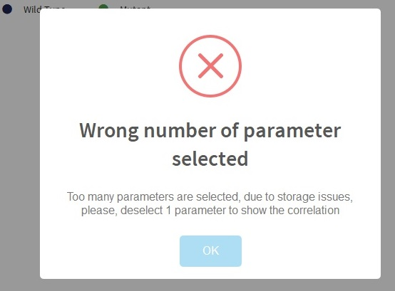To reduce the data, we eliminate the pair rows and leave the odd ones. In case there's still to much data, the process is repited.